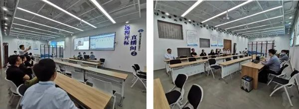
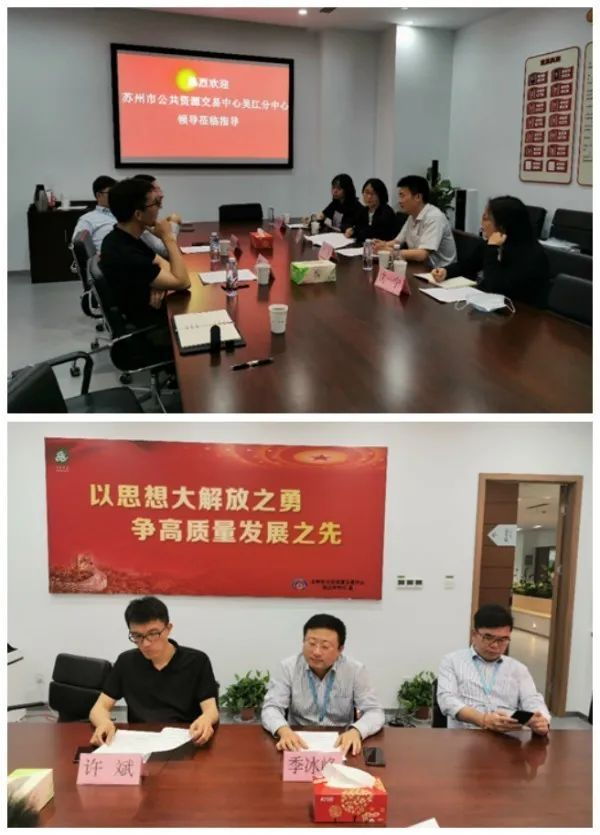

【信息发布时间：2020-07-09阅读次数：】 【我要打印】 【关闭】
5月15日上午，苏州市公共资源交易中心吴江分中心副主任王志带队，与吴江区财政局政府采购科一行四人来我交易中心进行业务交流，我交易中心副主任季冰峰、市财政局政府采购科科长许斌等人参与了交流座谈。
双方首先参观了服务大厅、开标区、办公区等区域，其中着重全程观摩了远程开标项目。远程开标直播间中，代理机构开标、供应商在线签到、解密等操作简捷高效，王主任给予了高度评价。

在随后召开的座谈会上，季冰峰副主任对王主任一行的来访表示热烈欢迎，介绍了我交易中心的基本情况，并就对方关注的政府采购远程开标情况予以详细阐述，讲解了软件建设、硬件改造、开标流程、手机端操作等方面。此外，双方就现行政府采购政策执行、难点痛点等也进行了深入探讨。

王主任高度评价了我交易中心政府采购远程开标情况，希望在以后的工作中进一步加强沟通交流，互相取长补短，共同提高公共资源交易效率和服务水平。